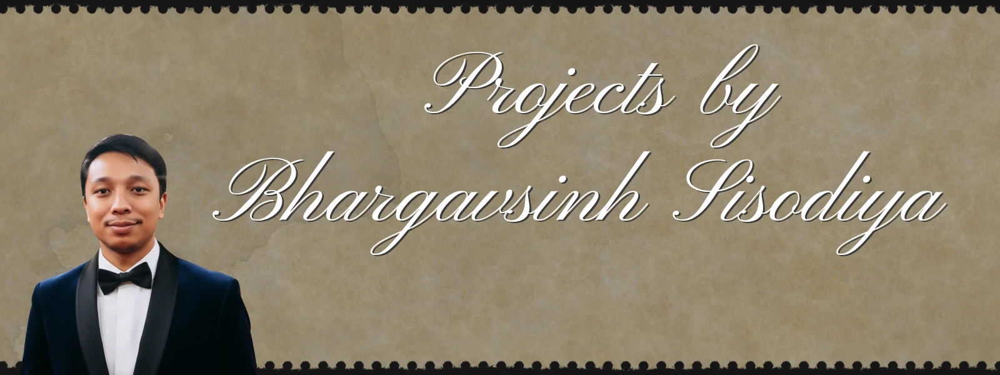

pwriter
Advanced Deep AI Prompt Architect — a specialized tool for crafting precise, high-performance prompts.
Open project →BCA Student · Technology Enthusiast · Writer · Aspiring Technology & Management Professional. This portal is curated for recruiters and hiring managers seeking a clear professional overview.
BHARGAVSINH SISODIYA is a BCA student and technology enthusiast with active interest in web development, digital products, and professional writing. He also maintains research and literary work in Gujarati, including published material on philosophy and Pushtimarg.
For a full narrative biography and heritage background, see the About page.
Web development, static sites, digital tools, and AI-assisted prompt systems (as documented in project pages).
Gujarati literary writing, research essays, ghostwriting services, and long-form content.

Advanced Deep AI Prompt Architect — a specialized tool for crafting precise, high-performance prompts.
Open project →Central overview of software and digital projects (including work under active development).
View projects →Professional ghostwriting services and rate information for books, articles, and creative projects.
Service details →Full professional profile and experience as documented on the resume page.
Open resume →Contact form and appointment information for professional inquiries.
Contact page →Personal introduction, education context, and background.
Read about →